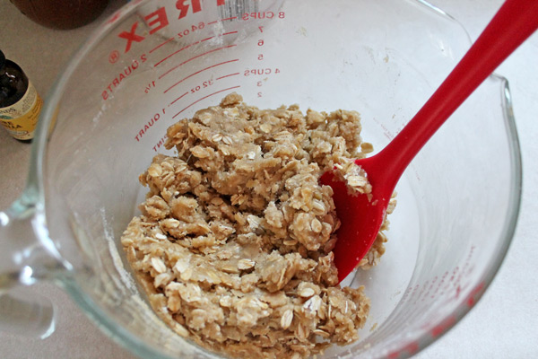
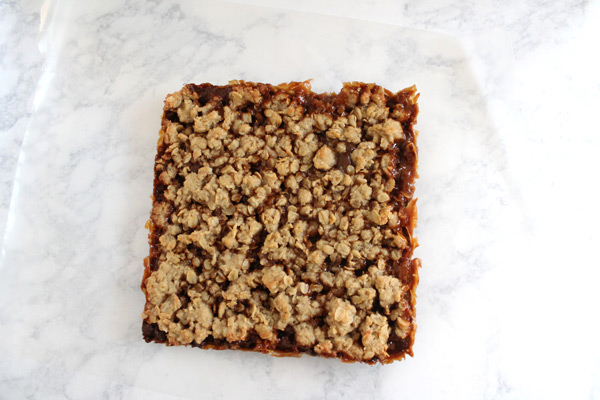
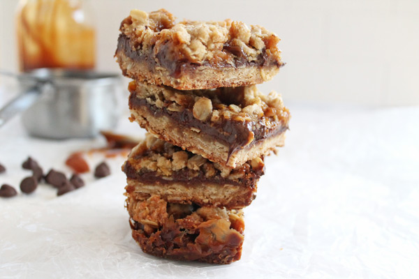

Ingredients
Crust
- 1 cup flour
- 1 cup oats
- 1 egg
- 1 TB vanilla
- 3/4 cup brown sugar
- 6 TB butter, melted
- 6 oz chocolate chips
Salted Carmel
- 1 cup granulated sugar
- 6 TB salted butter
- 1/2 cup heavy cream
- 1 tsp salt
A delicious and easy sweet treat!
These are decadent. These are delicious. These are dangerous. (If you have no self control, like me.) Ugh. They are just so good. I really don't know what else to say about them other than just go make them. Go make them now.
They do take a little bit of time to make. First you have to make the salted caramel recipe from Sally's Baking Addiction. Oomph. I maybe, sometimes, ok always end up burning my tongue on this because it is just so good. Don't do that. But do make this caramel. It's pretty easy as far as caramel goes, meaning I've never ruined it. (Let me clarify that... I have ruined plenty of other caramel recipes before, so this is a step in the right direction for me.) Sally has perfect instructions and step by step photos to help you along the way!

You will want to make the salted caramel ahead of time. Sally has some really great step-by-step photos to help you out! Melt 1 cup of sugar over medium heat, being sure to constantly stir. Once the sugar is completely melted, it will be amber colored. Once all lumps are gone, stir in butter, stirring constantly. The mixture will bubble a lot, so be careful not to burn yourself. Continue to whisk the mixture until the butter is completely mixed in - about 2-3 minutes. Be patient, you really want to make sure it is all incorporated and the butter is not just sitting on top. Very slowly drizzle in the heavy cream, being sure to whisk the entire time. The mixture will bubble here too. Once all cream is added, allow mixture to boil for 1 minute and then remove from heat and stir in salt. Allow to cool slightly and transfer to jar or other container.